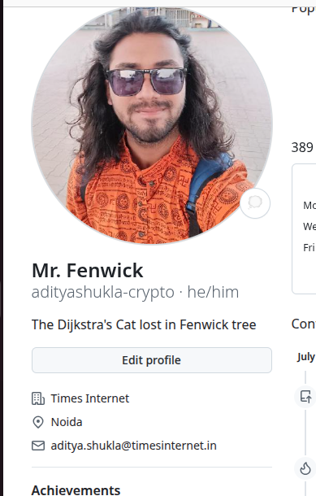
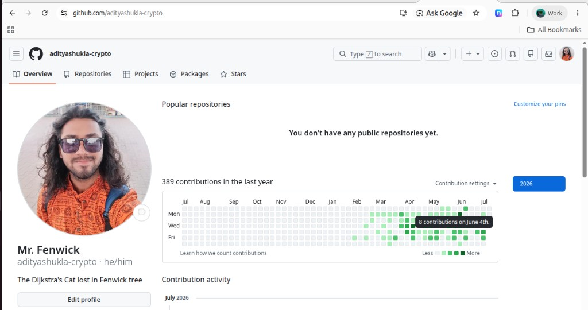
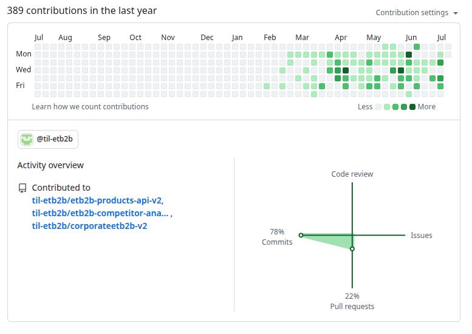

Software Engineer Intern — Live production · Feb–Jul 2026
Author: Aditya Shukla
Mon, July 13

@adityashukla-crypto · Times Internet · Noida

389 contributions · strong Feb–Jul 2026 production activity

Live production on @til-etb2b: products-api-v2 · competitor-analysis · corporateetb2b-v2 (78% commits · 22% PRs)
I’m Aditya Shukla (github.com/adityashukla-crypto). As a Software Engineer Intern at Times Internet I handled live production code, shipped with the product team and senior developers, and delivered features — including Signal — on OneWorld.
| Role | Software Engineer Intern — live production (@til-etb2b) |
| Reporting Manager | Sanjay Kumar Tiwari — Head of Technology |
| Mentors | Pramod Sharma · Nama · Abhishek |
| Impact | 389 contributions · OneWorld live · production PRs |